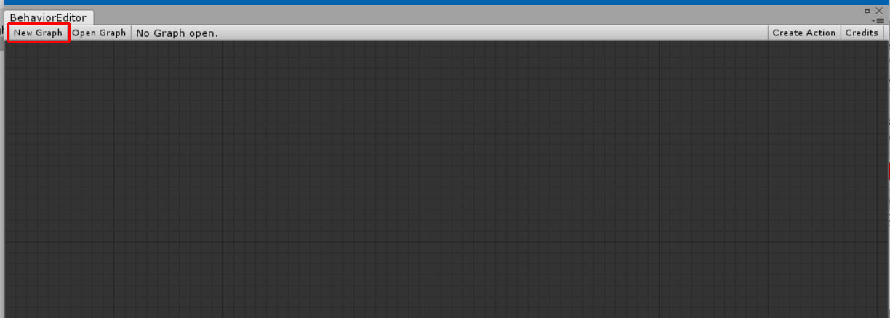
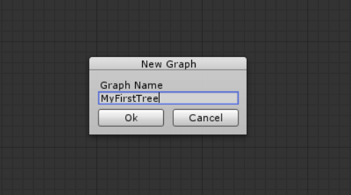
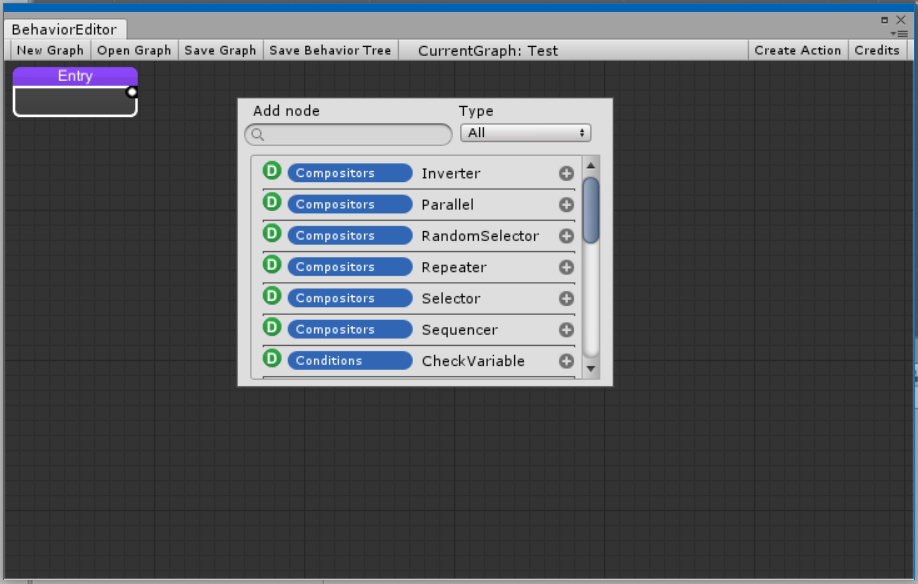

Creating BehaviorTree Graph
Behavior tree graphs are the 'Proyect' where you edit the logic of your Behavior trees.
To Create a Behavior tree graph, Open the Behvaior editor located on "Window/MoonBehavior/BehaviorEditor"
Click on "New Graph".

A window will display, put the name and hit "Ok".

Adding nodes
Right click > "Add node" to display the node list

To add a node just click on the (+) Icon of the selected node.
Search filter: You can Search by name or by category (the blue label) and also you can filter the type (Actions or Decisions)
Moving nodes
You can move nodes holding left click ..

Recursive move holding Shift + left click.

Connecting nodes
To connect a node to other just hold the cursor from the output of source node to the input of target node and release it.

The node output don't care if it's already connected; if it's connected it will remove the connection automatically.
To un-connect a node just hold the connection from the input and remove it from the input area.
Exporting data
To export the BehaviorTrees to use in your game you need to click 'Export BehaviorTree' on the BehaviorEditor window every time you made changes.

Behavior Tree Examples
Examples are aviable at This repository